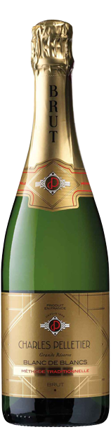

Champagnes e Espumantes

Charles Pelletier

Piper Heidsieck

Ruinart Rose

Ruinart Blanc de Blanc

Billecart Salmon

Pol Roger Sir Winston Churchill Vint 2013

Louis Roederer Cristal Brut 2013
Vinhos Brancos


Vinhos Rosés

QUINTA DOS CARVALHAIS COLHEITA ROSÉ

FITA PRETA ROSÉ
Vinhos Tintos
Alentejo

CEM REIS

PERA MANCA
Beiras

Vinhas Velhas de Santa Maria
Douro


Espanha

Pintia
Itália